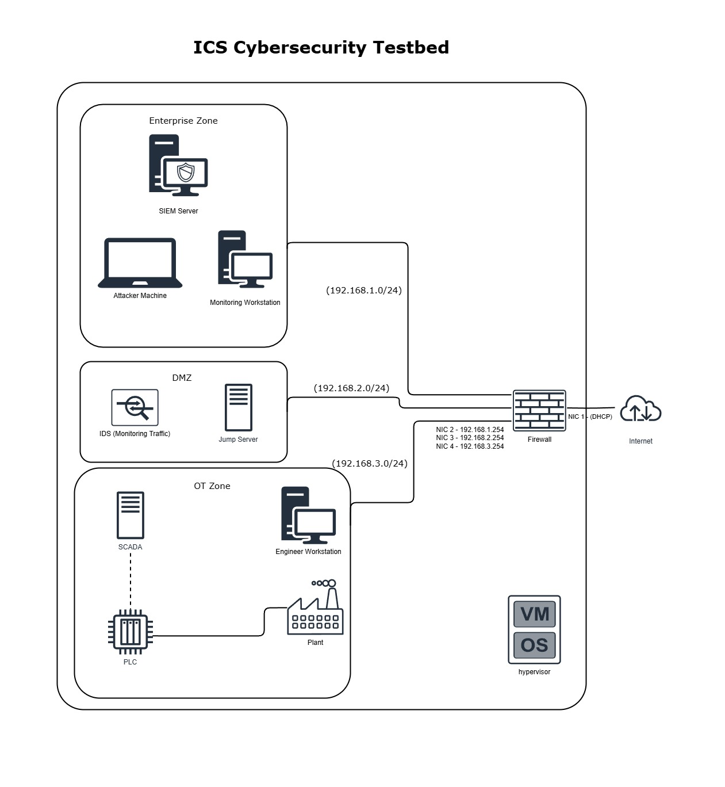
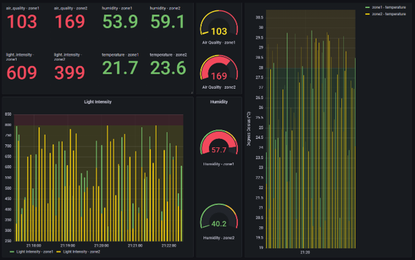
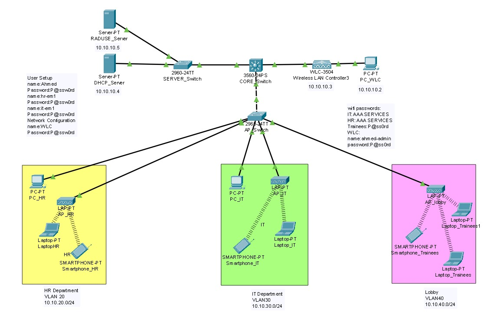

Featured Projects

ICS Cybersecurity Testbed (FYP)
A full Zero Trust ICS environment built with pfSense, Wazuh, Suricata, and TLS to protect Modbus SCADA systems. Simulated OT/DMZ/IT zones and validated resilience through 8 real attack scenarios.
- Segmented networks into IT, DMZ, and OT zones.
- Deployed Suricata IDS & Wazuh SIEM for real-time monitoring.
- Secured Modbus/TCP via stunnel TLS and tested replay/command injection attacks.

Cybersecurity Virtual Lab
Simulated a segmented enterprise network using pfSense, Docker, Active Directory, and Wazuh SIEM on Hyper-V & VMware. Designed to train and test real-world attack/defense scenarios.
- Deployed DVWA, bWAPP, and WebGoat via Portainer.
- Configured multi-VLAN lab, enforced strict firewall rules, and collected SIEM logs from 4 zones.

Industrial IoT WSN Monitoring
Built an MQTT-powered sensor simulation with Docker, InfluxDB, and Grafana for real-time environmental metrics and alerts across two zones.
- Used Mosquitto MQTT → Python ingestion → InfluxDB → Grafana pipeline.
- Configured Grafana alerts and custom dashboards for temperature, humidity, air quality, and light intensity.

WLAN Design with VLANs & RADIUS
Designed and implemented a secure WLAN for a two-floor company focusing on VLAN segmentation, RADIUS-based authentication, and differentiated access control.
- Segmented network into HR, IT, and Trainee VLANs.
- Configured RADIUS server for WPA2-Enterprise authentication.
- Implemented guest Wi-Fi with WPA2-PSK on a separate VLAN.